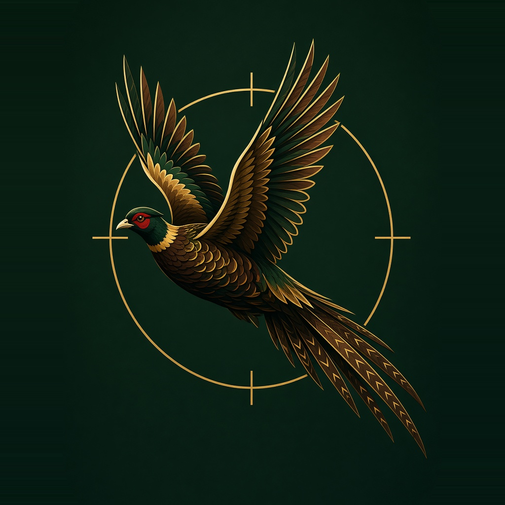
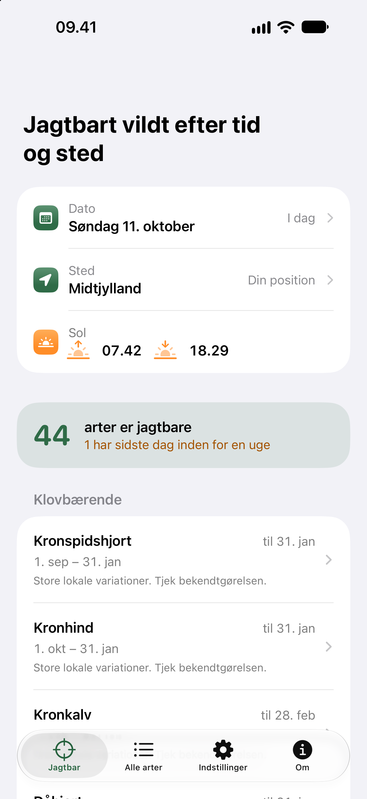

JagtFokus
Kommer i App Store
Hvad er jagtbart
i dag, her?
Se på få sekunder, hvad der har
jagttid på dagen og stedet.
I dag og her
Dato og sted afgør listen. Ikke klokkeslættet. Standard er i dag og din position.
Lokale tider
Ø før område før region før Danmark. Den mest lokale tid gælder.
Uden net
Ingen konto. Ingen tracking. Ingen reklamer. Positionen bliver på telefonen.

JagtFokus
Sådan ser det ud
Råbuk på Als
Lokal jagttid. Egne perioder, ikke de generelle.
Alle arter
Generelle tider i Danmark. Søgbar, med tidslinje.
Også i mørke
Lys, mørk eller som telefonen. Samme svar.